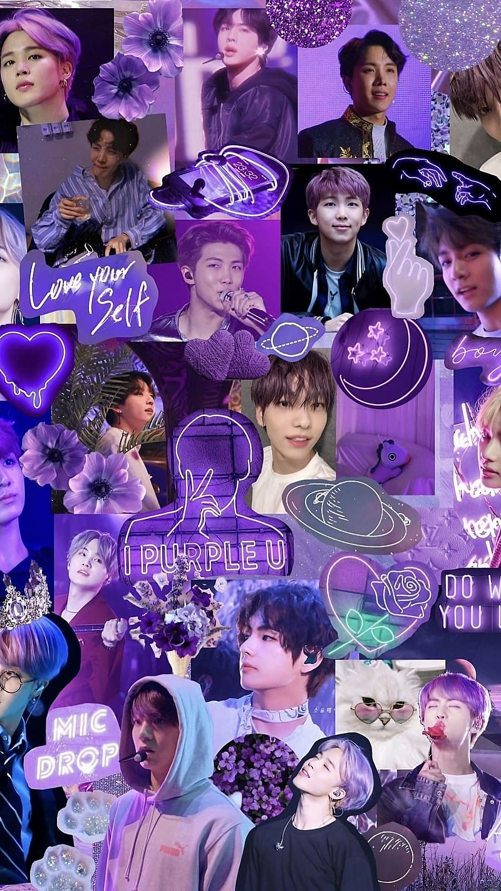

Itinatag ng Big Hit Music (ngayon ay HYBE Corporation), binubuo ang BTS nina RM, Jin, Suga, J-Hope, Jimin, V, at Jungkook. Noong Hunyo 13, 2013, sila ay pormal na nag-debut gamit ang album na 2 Cool 4 Skool. Simula pa lang, nagbida na sila ng mensahe tungkol sa mga hamon ng kabataan at paghahanap ng sariling pagkakakilanlan.
Sa mga album tulad ng The Most Beautiful Moment in Life trilogy at Love Yourself series, nakuha ng BTS ang puso ng mga tagahanga sa buong mundo. Ang kanilang kanta na 'Blood Sweat & Tears' at 'Fake Love' ay naging pandaigdigang hits, at sila ang unang Korean act na nag-headline ng mga konsyerto sa mga malalaking stadium sa US at Europe.
Naging mga pambansang ambasador ng kultura ng South Korea ang BTS, at nagsalita pa sila sa United Nations para itaguyod ang edukasyon at pagkakaisa ng kabataan. Ang kanilang mga kanta tulad ng 'Dynamite', 'Butter', at 'Permission to Dance' ay nagdala ng saya at pag-asa sa mga tao sa buong mundo, habang patuloy silang tumutulong sa mga proyekto ng kawanggawa.
Iconic Albums & Songs
Isang plataporma na nakatuon sa pagpapahalaga sa buhay at trabaho ng BTS isang grupo na muling hinubog ang pandaigdigang musika at kultura. Layunin namin na ipakita ang kanilang mga tagumpay, mensahe ng pag-ibig at pagkakaisa, at kanilang impluwensya sa mga henerasyon ng tagahanga (ARMY).
Sa pamamagitan ng platapormang ito, nais naming ipakita kung paano sila nagdudulot ng positibong pagbabago sa mundo.

May mga tanong ka ba o nais mong malaman pa tungkol sa BTS? Huwag kang mahiyang makipag-ugnayan sa amin!